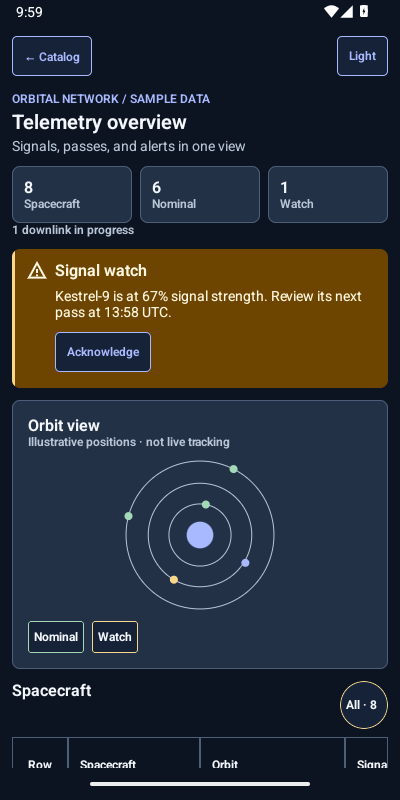

01 / SAN JUAN
Electric fleet
Track vehicles, routes, charging, and the work that needs attention.
Open in the catalogOpen-source Jetpack Compose
Brace brings clear controls, rich tables, and flexible themes to complex Android apps. Explore two runnable examples, then check exactly which components are ready to use.
Source is in progress. No Maven Central release yet.
Made for demanding screens
These are fictional operations apps built with Compose and Brace source. Search, filter, select rows, and change the theme in the Android catalog.
Track vehicles, routes, charging, and the work that needs attention.
Open in the catalogReview spacecraft signals, act on alerts, and move from an overview into the details.
Open in the catalog
Example data and orbit positions are fictional. Images are unedited emulator captures from the catalog source. They demonstrate components in context and do not change release status. How captures are verified ↗
Component index
Search Brace components and design features. Open a row for Android behavior, code, and source links. Status comes from tests and releases, not screenshots.
Loading components…
OPEN A COMPONENT FOR DETAILSLoading source baseline…
Real Android captures
These screenshots come from the Android app. Open one for the source, appearance settings, and a Compose example.
The web gallery shows static states. Touch, keyboard, screen reader behavior, and runtime theme controls live in the Android catalog.
Check availabilityStart building
Build the catalog and try the local Maven artifacts.
02 / MAKE IT YOURSLight, dark, contrast, brand, and density from one token system.
03 / WORK WITH DATAViewport rendering, fixed headers, selection, and keyboard movement.
04 / EXPLORENative behavior, code examples, accessibility, and current limits.
Looking for the full record? Reference version · Component status · Attribution · Contributing